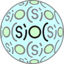

Cloud's blog
DERI “SIOC” Research Wins Seven-Year Influential Paper Award
2012, June 13 - 11:57 — CloudA paper on the SIOC framework from the Digital Enterprise Research Institute at NUI Galway, funded by Science Foundation Ireland, has just been announced as the winner of the seven-year influential paper award from the Extended Semantic Web Conference (ESWC), an annual conference held in Europe that focuses on next-generation web technologies.
Major change to a SIOC term: User is now called UserAccount
2010, March 23 - 15:24 — CloudAs per recent discussions on the SIOC developers mailing list and requests from many parties requesting clarification of the term sioc:User (which has oft been confused with foaf:Person), we are happy to announce that the new term sioc:UserAccount has been added to the ontology in replacement of the now-deprecated sioc:User term (in revision 1.35 of the SIOC ontology).
Obama Administration Using Technology Developed at NUI Galway
2009, April 2 - 19:47 — CloudAn internet technology developed at NUI Galway is to be used by President Obama's administration in its new website devoted to the $800 billion economic stimulus package. The administration's 'Recovery.gov' site will employ a web standard, created at NUI Galway's Digital Enterprise Research Institute (DERI), to bring an unprecedented level of transparency to the US Government.
Tales from the SIOC-o-sphere #9
2009, March 19 - 04:04 — CloudIt's been another exciting six months in terms of SIOC-related developments. Here's a summary:
- In today's blog post entitled "Obama’s Groundbreaking use of the Semantic Web", David Peterson references a recent presentation by George Thomas about recovery.gov at Transparency Camp where he details a variety of Semantic Web technologies (including SIOC) that will be used. The presentation also includes the SIOC ontology model as an illustration.
- As mentioned in a previous message, Yahoo! SearchMonkey has published a list of recommended vocabularies for developers of SearchMonkey applications. SIOC has been chosen as a suitable reference vocabulary to describe the activities of online communities, e.g. “blogs, discussion forums, Q&A sites", and can be used along with FOAF to describe the social networking stack. This article from UMBC Ebiquity also discusses the recently-announced support for RDF in Yahoo! Search BOSS (Build your Own Search System).
- Drupal creator Dries Buytaert wrote a very interesting and encouraging post last October entitled "Drupal, the Semantic Web and Search" in which he said: "On a social networking site built with Drupal, [semantic technology] opens up the possibility to do all sorts of deep social searches - searching by types and levels of relationships while simultaneously filtering by other criteria [...] and if Drupal core supported FOAF and SIOC out of the box, you could search within your network of friends or colleagues. This would be a fundamentally new way to take advantage of your network or significantly increase the relevance of certain searches." This was followed up with another post on Monday where Dries talked about some exciting possibilities for exposing the structured data that is available in many Drupal deployments, and the work that is ongoing to have RDFa available in Drupal 7 (read more in my RDFa and Drupal blog post from yesterday). There is also a great video which shows some use cases and examples for RDFa in Drupal.
- Views Datasource is a set of plugins for the Drupal Views module for rendering node content in a number of shareable, reusable formats including RDF (FOAF, SIOC, and DOAP).
- Claudia Wagner has published an extended version of the WordPress SIOC Exporter that also exports any semantic metadata embedded within the content of a blog post.
- The Web Semantic blog has described how to process SIOC feeds with Jenabean. This was followed up by a nice description of how to write out SIOC triples using Jenabean.
- David Newman has published the myExperiment ontology, reusing concepts from Dublin Core, FOAF and SIOC since they are closely related to the two main functions of myExperiment (i.e. a social networking framework and a metadata registry).
- Chris Clarke from Talis and Fiona Greig from the University of Plymouth have written an interesting case study for the W3C SWEO IG entitled "A Linked Open Data Resource List Management Tool for Undergraduate Students", where FOAF and SIOC are being used for data appropriation in other contexts.
- Founder of HyperWeek Raphael Briner and others have been discussing how FOAF and SIOC could be used to (semantically) describe a HyperWeek group.
- TagCrumbs, a social placemarking service, have announced that they are now making placemark data available in RDF. Here is an example of a placemark for the Twestival in Galway.
- Frank Van Harmelan has posted on the LarKC weblog about how SIOC data could be used by early adopters of LarKC-type technologies.
- The FLOSS (Free/Libre Open Source Software) project is looking at effective work practices and dynamics in free and open source software development (teams). They are trying to use SIOC to model e-mail lists and threads.
- Identi.ca, an open-source microblogging platform based on Laconi.ca, is now publishing both FOAF and SIOC data. For example, here is an Identi.ca user in FOAF and a SIOC-augmented RSS feed for that user, and here is a feed from an Identi.ca group about SIOC. Uldis Bojars (Happy Birthday to you today!) has started a collection of known minor issues here.
- Fabrizio Orlandi and Alex Passant have created a new SIOC Semantic Web data exporter for MediaWiki-based wikis.
- Michael Haschke has written a SIOC plugin for DokuWiki called "DokuSIOC". The plugin creates metadata with auto-discovery links and content negotiation, pings PingTheSemanticWeb.com on updates, and provides linked data.
- The Creative Commons Network has been launched, with CC CTO Nathan Yergler saying: "The CC Network is where the semantic rubber meets the web road. With the CC Network we're leveraging everything we've learned over the past five years about metadata on the web, including the new RDFa standard, along with the work of many other groups, including FOAF, POWDER, and SIOC."
- Metadata from the 7th International Semantic Web Conference is being published in RDF, including SIOC for the comments. The related Semantic Web Dog Food service was also announced by Moeller et al. as a central repository for Semantic Web conference metadata.
- SIOC is now OWL-DL compliant. This change was motivated by the SWANSIOC initiative in the W3C HLCSIG (Semantic Web for Health Care and Life Sciences Interest Group), which uses the Science Collaboration Framework based on Drupal.
- A recent article from Joke van Niekerk discusses how health care management can be advanced with the (Social) Semantic Web, including SIOC.
- Login to post comments
Prize winners visualise Irish online life in the boards.ie SIOC Data Competition
2008, November 26 - 09:45 — CloudThe winners of the SIOC (pronounced "shock") data competition being run by DERI at the National University of Ireland, Galway have been announced. The competition ran from September to October 2008, and the brief was to produce an interesting creation based on a data set of discussion posts reflecting ten years of Irish online life from boards.ie, Ireland's largest community website.
Tales from the SIOC-o-sphere #8
2008, September 27 - 18:43 — Cloud It's time for another installment from the world of SIOC!
- After the news in May that Digg were incorporating RDFa in their pages, Digital Bazaar CEO Manu Sporny (in Blacksburg, where I lived for some time in 1996 and 2000) has written an excellent three-part guide on the public-rdfa list about how more semantic information can be incorporated into Digg pages using SIOC RDFa (parts 1, 2 and 3). You can view the result (as validating XHTML) here. See also this interesting related blog post on RDFa by Manu.
- As part of their data portability drive, the mobile phonebook service ZYB (recently acquired by Vodafone) announced on their blog in June that their latest release introduced FOAF and SIOC exports from user's profile pages (with the full export only available to the users themselves at zyb.com/profilename.foaf and zyb.com/profilename.sioc respectively). SIOC is being used to describe actions performed by ZYB users such as shouting, writing comments or updating status messages on Facebook. You can also read more about their new public feeds API for ZYB.
- The SemanticEngine.NET class library has just been released by Mads Kristensen, which supports various different formats ready to use in .NET (currently APML, FOAF, XFN, and soon SIOC and microformats).
- Gautier Poupeau has written an Operator user script that checks if a SIOC-enabled post is referenced in del.icio.us.
- Martynas Jusevičius talks about how technologies including SIOC can enable semantic social networks.
- Brad Fallon gives SIOC a namecheck in his Freeline Report video podcast. Thanks Brad!
- On the IBM Developer Works site, Rob Crowther mentions SIOC in his description of how to plan a Semantic Web site.
- Ben O'Steen describes how he plans to ditch his database-based blog for a semantic one, using terms from SIOC.
- Triplify 0.4 has been released which uses SIOC and other vocabularies to expose instance data as RDF from a variety of web applications.
- Kingsley Idehen describes how WordPress blogs can be incorporated into the Linked Data Web using Virtuoso.
- Daniel Lewis talks about a Universe of Discourse / Discussion and SIOC. He has also developed a WordPress theme called StraightWalker that links into the SIOC vocabulary.
- I mentioned last time that the Sindice group would soon release the SWPop widget for WordPress. It's now available as the SIOC Widget and it allows you to view posts, comments, topics, etc. made by any blog commenter across the SIOC-o-sphere (as indexed by Sindice). They've also created a SIOC API for Sindice.
- Alex Passant has led work on a prototype system called SMOB (Semantic Microblogging) for distributed / decentralised microblogging, that uses FOAF and SIOC to model microbloggers, services and microblog posts. You can read more in my blog post about SMOB or in Alex's blog post. You can also try the anonymous client and see a server view.
- From IRC (1, 2), we found out about a French wiki system called WikiNi that has been adapted by Charles Nepote to allow publishing to SMOB. You can get the client here.
- This SMOB post from Gautier Poupeau links to his Drupal 5 widget that shows the latest SIOC postings on a given SMOB server.
- Steve Flinter has written a blog post entitled "Tangler versus SIOC", referring to the ProgrammableWeb announcement about Tangler, an API for discussion forums. I think it'd be great if SIOC could be used by Tangler, and I'm glad to see that others think so too.
- TCD student Dave Langley has created the Online Semantic Community Framework (OSCF), a platform for managing online communities based on semantic technologies including SIOC. It uses a SPARQL endpoint as its data source.
- David Peterson has been discussing on the public-rdf-in-html-tf list about which vocabularies should be used in Drupal core, and Manu Sporny replies with some reasons for using FOAF and SIOC independently or together.
- Deirdre Lee, Vassilios Peristeras et al. have been working on a very nice enterprise application for SIOC, where it is being used in collaborative work environments (CWEs) as an interoperable format to share workspaces and documents between different CWE systems (e.g. BSCW and Business Collaborator). This work was carried out as part of the ECOSPACE integrated project, and you can find out more from their newsletter wiki, our IEEE IS publication or attend the presentation at ODBASE 2008 in November.
- The Semantic MediaWiki Plus User Group has been set up, and they are investigating how SMW templates can support FOAF and SIOC.
- I'm very pleased to announce that our SIOC "partner-in-crime" Alex Passant has joined DERI. Alex recently gave an interesting presentation at the Centre for Digital Music (repeated here in DERI) about where "Social Music Meets the Semantic Web".
- Mike Alexrod has blogged about joining the SIOC-o-sphere, along with the unexpected SEO benefits that he experienced as a result!
- Over 60 competitors have signed up for the boards.ie SIOC Data Competition and there’s still one month left...
- Finally, the 1st Social Data on the Web Workshop (or what we like to call the "SIOC Workshop"!) will be held at the 7th International Semantic Web Conference in Karlsruhe this October. The list of accepted papers is now available; it's going to be a very interesting event. We hope that you can attend!
Previous SIOC-o-sphere articles:
#7 http://sioc-project.org/node/328
#6 http://sioc-project.org/node/310
#5 http://sioc-project.org/node/294
#4 http://sioc-project.org/node/272
#3 http://sioc-project.org/node/271
#2 http://sioc-project.org/node/138
#1 http://sioc-project.org/node/79
If you wish to contribute to the next article, join the SIOC Twine and use the tag "siocosphere9" when you add items.
- Login to post comments
Tales from the SIOC-o-sphere #7
2008, April 4 - 13:47 — CloudIt's been three months since my last round-up of all things SIOC-ed, so here is entry number seven in the series:
- Version 1.0 of a SIOC API for Perl has been released on CPAN! The CPAN page for the SIOC API is here. A description of the project itself is available here. Thanks to Jochen Lillich, Thomas N. Burg, and also to Internet Privatstiftung Austria (IPA) for funding this work.
- A new RDF API module for Drupal has been announced that will include sub-classes / sub-properties of popular terms from SIOC, DC, etc. (Drupal creator Dries Buytaert has also said that an RDF API will appear in the core of Drupal 7; see this video.) Stephane Corlosquet has also made an RDF Schema proposal for Drupal (which includes SIOC) and has received very positive feedback. Some potential RDF use cases for Drupal have also been described.
- Gautier Poupeau has written a useful guide (en Français) on how to RDF-ise your blog in two parts: the theory and the practice. It uses RDFa and vocabularies including SIOC, SIOC Types, DC Elements, DC Refinements and XSD.
- SIOC data is now being produced by memoQ by Yuki Matsuoka and Hideaki Takeda of the National Institute of Informatics, Japan.
- Keith Alexander at Talis has described (and shown) how it is possible to create client-side Semantic Web applications using their Convert service. For example, on this page comments functionality is added to a section identified with a "sioc:has_reply" property using a short piece of embedded widget code.
- ASP.net developer John Dyer has written a nice post on DataPortability and its standards, talking about OpenID, FOAF, SIOC, APML, etc. Daniel Lewis has also written a good overview of DP. More recently, John announced the DataPortability pack for BlogEngine.NET that produces SIOC, APML and FOAF. BlogEngine.NET founder Mads Kristensen has also written about data portability and making an API to your website.
- OpenLink's Personal Data Space Explorer now also exposes SIOC, FOAF and other RDF data. See Kingsley's post on linked data via FOAF and SIOC.
- Uldis Bojars, Alex Passant and I will present a tutorial entitled "Interlinking Online Communities and Enriching Social Software with the Semantic Web" at the 14th International World Wide Web Conference (WWW2008) in Beijing this month.
- I did an interview with SemanticWeb.com called "SIOC-ing the Semantic Web" in January, and talked to PCWorld about data portability and SIOC. Uldis recorded a podcast with Talis in February with SIOC as one of the main topics. (Eric Miller also described in another Talis podcast how FOAF and SIOC are useful not only for getting at historical content, but for providing fine-tuned content-delivery systems connecting people interested in various aspects of a particular domain.)
- Alex has produced a universal SIOC reader widget. The widget can query for SIOC data from any SPARQL endpoint that provides a JSON output for SELECT queries. (Alex has also released the Meaning of a Tag ontology which links with SIOC and SCOT.)
- Phillip Rhodes has been working on the OpenQabal "social software operating system" which integrates a set of applications (including Roller and JavaBB ) via single sign-on (SSO), a common look-and-feel, and SIOC.
- Sean Palmer has written an interesting article entitled "One Semantic Application, One UI?" in which he talks about Tabulator and its interfaces, including application specific panes for FOAF, SIOC and DOAP.
- Tim Berners-Lee talked about FOAF and SIOC in an interview with Marie Boran from Silicon Republic for the Irish Independent: "A project that started back in 2000 called Friend-of-a-Friend (FOAF) represents relationships between people, as well as basic contact details. SIOC does this for groups: it extends the FOAF idea to being able to talk about whole groups of people. Groups are a very important part of the Web because online communities are where we form our trust. It is very useful to build tools that apply to all the online communities so they can all generate this social trust information. I am excited about SIOC because you can use that information to determine trust, to let people in. If someone is in a group that a friend of mine is part of, I can create another relationship based on that."
- Uldis, Tuukka Hastrup and Thomas Schandl are updating Uldis' WordPress SIOC Importer, which allows you to create blog posts based on SIOC data ported from weblogs, mailing lists, forums, IRC, etc.
- Chris Bizer, Richard Cyganiak and Tom Heath have published a very useful document called "How to Publish Linked Data on the Web" (mentions vocabularies to use like FOAF, DC, SIOC, DOAP, SKOS, MO, Rev and CC). See also Leo Sauermann and Richard's "Cool URIs for the Semantic Web".
- In the area of collaborative work environments, SIOC is being used in the Ecospace project to export metadata from both BSCW and BC. Here is a BSCW SIOC export service, and there is also a CWE version of the SIOC Explorer (which includes data from both BSCW and BC).
- Sören Auer's team have produced Triplify, which enables simple mapping of RDB to RDF data in a variety of web applications. Using Triplify, SIOC and FOAF data can be produced from Drupal 5, WordPress, WackoWiki, and Open Journal Systems.
- The new version of BoardTracker will have an API to export data using SIOC.
- The Sindice group will soon release the SWPop widget for WordPress that allows you to view posts, comments, topics, etc. made by any blog commenter across the SIOC-o-sphere (as indexed by Sindice). You can see a preview here.
- This is an interesting post by Andrew A. Peterson on how semantic standards like RSS, FOAF and SIOC (SIOD!) can provide sustainable SEO for websites, referencing the Yahoo! Search announcement regarding support for RDF and microformats.
- Ben O'Steen describes a Pylons interface to carry out CRUD functionality where items are linked together semantically using SIOC.
- Leigh Dodds has a fun FOAF (and SIOC) tale about Bee Node (told using SPARQL)!
- I've presented at WebCamp on DataPortability, web standards, SIOC and FOAF and recorded a related video on DataPortability and me. It pales in comparison to this one from Danny Ayers!
Previous SIOC-o-sphere articles:
#6 http://sioc-project.org/node/310
#5 http://sioc-project.org/node/294
#4 http://sioc-project.org/node/272
#3 http://sioc-project.org/node/271
#2 http://sioc-project.org/node/138
#1 http://sioc-project.org/node/79
- Login to post comments
SIOC tutorial accepted for WWW2008
2007, December 7 - 11:53 — CloudI'm happy to announce that our tutorial proposal on SIOC entitled "Interlinking Online Communities and Enriching Social Software with the Semantic Web" (Uldis Bojars and John Breslin of DERI, NUI Galway, Alexandre Passant of EDF R&D / LaLICC, Université Paris 4) has been accepted for WWW2008, the 14th International World Wide Web Conference to be held in Beijing, China in April. The abstract is as follows:
Tales from the SIOC-o-sphere, part 6
2007, December 1 - 10:05 — CloudHere are the latest happenings from the world of SIOC during the past few months, with thanks to all involved in supporting the initiative! (Note to new readers that SIOC is an open data format for community description.)
- Engage, the community information application from Talis, is using SIOC, SKOS and FOAF.
- Loic Le Meur's Seesmic microvlogging service ("the video Twitter") has decided to adopt the SIOC ontology as one of their open platform formats (along with FOAF and DC; see 1, 2).
- OpenLink have released an EC2 / S3 Amazon Image-version of their Virtuoso product, which includes SIOC support: "your blogs, wikis, bookmarks, etc. are based on the SIOC ontology (think open social graph++)".
- PTSW's namespace statistics page lists SIOC as their fourth most used namespace out of 423.
- Planet Semantic Focus has launched, and plans to expose PSF community member discussions using SIOC and to interlink these with comments from the original blogs themselves shortly.
- Dan Brickley has published a nifty FOAF classes and properties diagram which shows the internal and external links (to SIOC, DOAP, Geo, etc.).
- Thomas Burg has received a grant from IPA's "netidee" funding call which will be used to develop a SIOC API for Perl.
- Oskar Welzl has SIOC-enabled the skin on his own blog and a friend's to produce combined RSS and SIOC descriptions (with an aggregate archive). You can view this in Tabulator starting at this URL.
- Dorai Thodla has written about Doug Englebart's "Networked Improvement Community" idea, and he discusses the overlap between improvement communities and the interlinked communities created via SIOC.
- Phillip Rhodes tells us about OpenQabal, an open source social networking and collaboration platform that will include SIOC support, allowing Roller, JavaBB and other component applications to become part of the SIOC-o-sphere.
- ImageMatters have announced a new open source social bookmarking and mashup application called gnizr, that exports saved bookmarks using SIOC and a tag ontology.
- Finally, the forthcoming Semantic Technologies Conference 2008 has listed SIOC among their appropriate topic areas in their call for proposals. Start writing now, the deadline has been extended to 10th December!
- Login to post comments
This resource is supported by Science Foundation Ireland under grant number SFI/02/CE1/I131 (Líon) and SFI/08/CE/I1380 (Líon 2) at the Digital Enterprise Research Institute, National University of Ireland, Galway.